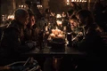

| EP | Imagem | Titulo | Prévia |
|---|---|---|---|
| 68 | "Winterfell" | Daenerys chega a Winterfell e Jon Snow recebe notícias importantes. | |
| 69 | "A Knight of the Seven Kingdoms" | Jaime discute seu caso na frente de uma audiência cética. | |
| 70 | "The Long Night" | Arya procura provar seu valor como guerreira. | |
| 71 |  | "The Last of the Starks" | Após uma vitória custosa, Jon e Daenerys viram as atenções para o sul enquanto Tyrion busca um acordo que poderia salvar incontáveis vidas. |
| 72 | "The Bells" | Daenerys e Cersei avaliam suas opções enquanto um conflito épico se aproxima de Porto Real. | |
| 73 | "The Iron Throne" | Fim da série. O destino dos Sete Reinos está em jogo enquanto o capítulo final da história é escrito. |